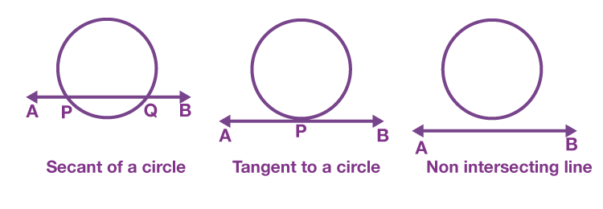
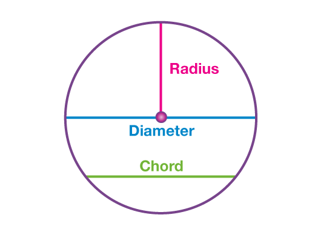
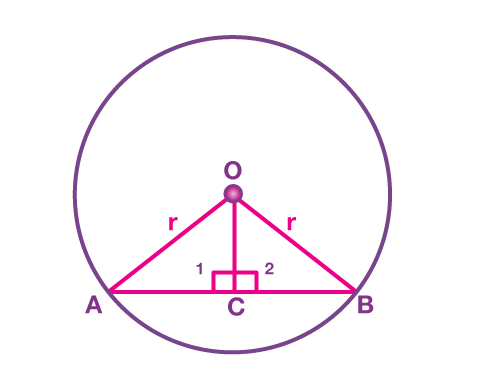
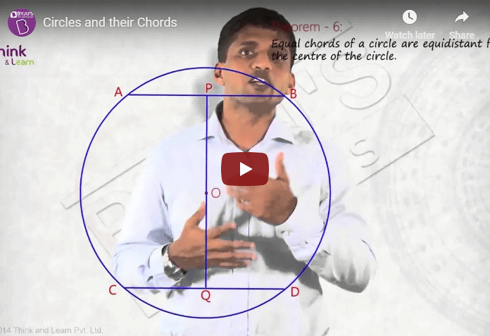

Radius Of A Circle And Chord
Radius of a circle is the distance from the center of the circle to any point on it’s circumference. It is usually denoted by ‘R’ or ‘r’. This quantity has importance in almost all circle-related formulas. The area and circumference of a circle are also measured in terms of radius.
Table of content
DefinitionA radius is a measure of distance from the center of any circular object to its outermost edge or boundary. A radius is not only a dimension of a circle but also for a sphere, semi-sphere, a cone with a circular base, a cylinder having circular bases. A circle can be defined as the locus of a point moving in a plane, in such a manner that its distance from a fixed point is always constant. The fixed point is known as the center of the circle and distance between any point on the circle and its center is called the radius of a circle. Diameter of a CircleThe diameter of a circle is the length of the line starting from one point on a circle to another point and passing through the center of the circle. It is equal to twice the radius of the circle. It is usually denoted by ‘d’ or ‘D’. Diameter = 2 x Radius Or Radius = Diameter/2 Diameter is the longest chord of the circle. Also, we can express the area and circumference of a circle with respect to the diameter. Circumference of circle = π (Diameter) Area of circle = π/4 (Diameter)² Radius, Diameter and ChordWe have already discussed radius and diameter of circle. Now suppose, there is a line and a Circle given on a plane. The line could touch circle at one point, or intersect at two points or it could be non-intersecting. Explanation: Given a line and a Circle, it could either be touching the circle, interesting line or non-touching. Consider any line AB and a circle. Then according to the relative positions of the line and the circle, three possibilities can arise as shown in the given figure.  Line AB intersects the given circle at two distinct points P and Q. The line AB in this case is referred to as secant of the circle. Points P and Q lie on the circumference of the circle, but they do not pass through the center of the circle ‘O’, hence line segment PQ is known as a chord of the circle as its endpoints lie on the circle. Therefore the chord of a circle can be defined as a line segment joining any two distinct points on the circle’s circumference. A chord passing through the center of a circle is known as the diameter of the circle and it is the largest chord of the circle. This diameter is twice that of the radius of a circle i.e. D=2r, where ‘D’ is the diameter and ‘r’ is the radius. Radius of a circle = Diameter/2 Diameter of a circle = 2 x Radius
EquationThe equation of a circle includes the radius and it is given by: (x-h)²+ (y-k)²= r² Where (h,k) is the center of circle. Radius of circle from AreaSince, the formula for area of a circle is given by: Area of circle = π(Radius)² Therefore, Radius²= Area/π Radius = √(Area/π)
How to find Radius with Circumference?If we know the circumference of the circle, then we can easily find its radius. Let us understand by example. Suppose, the circumference is 40 cms, then find the radius. Since, Circumference, C = 2πr R = C/2π R = 40/2π R = 6.37 cm Radius FormulaWith respect to area and circumference, we can write the formula for the radius as:
|
||||||||||||||||||||||||||||||||||||||||||||||||||||||
|---|---|---|---|---|---|---|---|---|---|---|---|---|---|---|---|---|---|---|---|---|---|---|---|---|---|---|---|---|---|---|---|---|---|---|---|---|---|---|---|---|---|---|---|---|---|---|---|---|---|---|---|---|---|---|
| S. No. | Statement | Reason |
| In ΔOAC and ΔOBC | ||
| 1 | OA = OB | Radii of the same circle |
| 2 | OC = OC | Common |
| 3 | ∠OCA = ∠OCB | Each angle measure 90 degrees |
| 4 | ΔOAC ≅ ΔOBC | By RHS congruence criterion |
| 5 | AC = CB | By CPCT (Corresponding parts of congruent triangles) |
The converse of the above theorem is also true.
Theorem 2: The line drawn through the centre of the circle to bisect a chord is perpendicular to the chord.

Given: C is the midpoint of the chord AB of the circle with centre of circle at O
To prove: OC⊥AB
Construction: Join OA, OB and OC
Proof:
| S.No. | Statement | Reason |
| In ∆OAC and ∆OBC | ||
| 1 | OA = OB | Radii of the same circle |
| 2 | OC = OC | Common side |
| 3 | AC = BC | Given |
| 4 | ∆OAC ≅ ∆OBC | By SSS congruency |
| 5 | ∠1 = ∠2 | Corresponding parts of congruent triangle |
| 6 | ∠1 + ∠2 = 180° | Linear pair angles |
| 7 | ∠1 = ∠2 = 90° | From statements 5 and 6 |
| 8 | OC ⊥ AB | From statement 7 |
Video Lessons
Solved Examples
Let us see some solved problems on radius and chord of a circle.
Example 1: Find the radius of the circle if its diameter is 16 cm.
Solution:
Given,
Diameter of circle = 16 cm
Radius of circle = Diameter/2
= 16/2
= 8 cm
Example 2: If the length of the chord of a circle is 8 cm and the perpendicular distance from the centre to the chord is 3 cm, then what is the radius of the circle?
Solution:
Let us draw a circle as per the given information.
Length of the chord = AB = 8 cm
Perpendicular distance = OP = 3 cm
Radius = OA
We know that, the perpendicular line drawn from the center of a circle to a chord bisects the chord.
AP = PB = 4 cm
In triangle OPA,
BY Pythagoras theorem,
OA²= OP²+ AP²
OA²= 9 + 16
OA²= 25
OA = 5
Therefore, radius = 5 cm
Frequently Asked Questions – FAQs
What is the radius of circle?
What is the relation between radius and diameter of a circle?
What is the equation of circle centered at (1,2) with radius equal 3cm?
(x-1)²+ (y-2)²= 3²
(x−1)²+(y−2)²= 9
(x²−2x+1)+(y²−4y+4) = 9
X²+ y²−2x−4y−4 = 0
This is the final equation.
What is the value of radius, if the area of circle is 78.54 sq cm?
Given, area = 78.54 sq.cm and π = 22/7
Therefore,
Radius = √(78.54/(22/7))
Radius = 5 cm (Approximately)
If the circumference of a circle is 100 cms, then find the radius?
R = 100/2π
R = 15.92 cm.
.jpeg)
.jpeg)